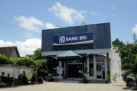

Daftar Bank BRI di Kota Bengkulu

Bank BRI Unit Pintu Batu
Alamat: Jl. Jenderal Sudirman, Pintu Batu, Bengkulu
Nomor Telepon: (0736) 341236

Bank BRI Cabang Timur Indah
Alamat: Jl. Timur Indah Raya, Pasar Melintang, Teluk Segara, Kota Bengkulu
Nomor Telepon: (0736) 24051
Bank BRI Cabang Bengkulu
Alamat: Jl. S. Parman, Padang Jati, Kota Bengkulu
Nomor Telepon: 14017 atau 1500017
Bank BRI Cabang Timur Indah
Alamat: Jl. Timur Indah Raya, Pasar Melintang, Teluk Segara, Kota Bengkulu
Nomor Telepon: (0736) 24051